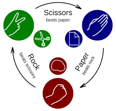
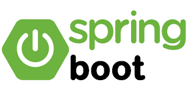

Proyectos
Lista de montañas rusas
Aplicación web que obtiene una lista de montañas rusas desde la API de Captain Coaster.
Para evitar problemas con CORS, se ha desplegado un servidor intermedio en Node.js, que recibe las peticiones del frontend en JavaScript y realiza las consultas a la API externa.
Los datos obtenidos incluyen nombres, parques y otros atributos, que se pueden filtrar desde la interfaz.
El usuario puede seleccionar montañas rusas en las que ha montado y guardarlas en una base de datos SQL mediante un backend PHP con patrón MVC.
Además, puede visualizar y filtrar su lista personalizada con información adicional obtenida dinámicamente desde la API.
Consultas Pokeapi

Aplicacion para practicar realizando consultas a la Api mediante Javascript.
Se obtiene el nombre de todos los Pokemon y se muestra en un desplegable con filtros para que el usuario seleccione uno.
Una vez elegido un Pokemon, se muestran diferentes datos e imagenes.
Ademas se puede navegar entre diferentes Pokemon pulsando sus nombres y el programa realiza consultas a la api sobre sus datos y los muestra al usuario
Agenda
Version mas sencilla de la anterior aplicacion, consistente tambien en una lista de tareas que se almacena en una base de datos.
El usuario puede ver sus tareas, eliminarlas, ediatrlas o marcarlas como completadas. A diferente de la anterior, en este caso solo puede utilizarla un unico usuario
El backend esta hecho en php, almacena los datos en una base de datos Sql, y el frontend para practicar lo he hecho con Javascript
Juego piedra papel tijera
Aplicación realizada integramente en Javascript para simular un juego de piedra papel o tijera. El usuario puede elegir cuantas partidas quiere jugar, y tras seleccionar su jugada, se compara el resultado con la jugada aleatoria del programa. Se devuelve al usuario si ha ganado o perdido y el numero de partidas que le quedan.
Carta restaurante

Aplicación realizada en PHP y Javascript. Carga una lista de platos del menu de un restaurante y los muestra al cliente junto con su precio.
El cliente puede seleccionar lo que desea pedir y la cantidad de cada uno de los platos. Por ultimo se le muestra un listado con todos sus pedidos, y el precio total de todo lo que ha seleccionado
Generador aleatorio nombres

Aplicación muy sencilla en Node.Js y express. El servidor tiene un array con varios nombres almacenados, y el frontend, al pulsar un boton, realiza una consulta a traves de una api y devuelve uno de los nombres aleatorios
No pongo el enlace a la aplicacion porque el servidor en Node.js esta desplegado en un servidor gratuito de Render, que si no se usa lo duerme, por lo que al entrar al proyecto, lo primero que genera es un error. Funciona en local y funcionaria si el servidor de Node estuviera desplegado en otro tipo de servidor de pago
Laravel ToDoList
Aplicacion, consistente en una lista de tareas que se almacena en una base de datos.
El backend esta hecho en Laravel, almacena los datos en una base de datos Sql, y el frontend para practicar lo he hecho en React
Permite al usuario iniciar sesion, ver sus tareas, eliminarlas editarlas, o marcarlas como completadas. Al lado de cada tarea, aparece el usuario al que pertenece, cada usuario puede gestionar unicamente sus tareas
Al igual que la otra aplicacion en laravel, por problemas con los sitios de hosting gratuitos, que suspenden los servicios de react y de laravel, no lo he desplegado, pero dejo el enlace al repositorio de github
Laravel base datos colegio
Con esta aplicacion he creado un Backend con laravel que guarda diferentes usuarios, pueden ser usuarios o administradores.
Con Sanctum, y el token que se obtiene al realizar el inicio de sesion, se identifica al usuario y se detecta si es un usuario o un administrador.
He definido varios metodos, a los que se puede acceder segun el tipo de usuario que inicia sesion.
Si es un usuario, podra consultar sus asignaturas y ver sus notas, mientras que si es un administrador, podra ver las notas de todos los usuarios, añadir modificar o quitar asignaturas, y crear nuevos usuarios.
Ademas el frontend lo he realizado tanto en Javascript como en React para practicar ambos lenguajes de programacion.
No tengo el proyecto desplegado, ya que la mayoria de sitios donde alojar el backend en laravel, solo me dejaban tenerlo durante un mes y luego lo apagan, pero dejo el enlace al repositorio de github
Tienda de ordenadores
En este proyecto he creado una plataforma para una tienda de ordenadores muy simple, para practicar a hacer el backend con Springboot.
He creado dos clases, computer y sale, para las que he creado un modelo, un repositorio con sus metodos y un controlador, pensado para acceder a este a traves de las rutas de una api.
El frontend esta hecho en html, css y javascript, y tiene varias consultas a la api, que llaman a los metodos definidos en el backend de springboot
La base de datos, con la que se interactua a traves de los metodos de Jpa, se crea desde el proyecto y es una base de datos Sql para poder persistir los datos una vez cerrada la aplicacion
Sistema de gestion de tienda usuarios y administradores
Proyecto mucho mas completo que el anterior que he desarrollado completamente en springboot, es una tienda en la que pueden iniciar sesion usuarios tanto usuaros como administradores.
Las vistas y las rutas a las que pueden acceder los usuarios y los administradores son diferentes, esto esta gestionado con Spring Security.
Por practicar a hacer un proyecto solamente con springboot, las vistas estan hechas con Thymeleaf, y la base de datos es una base de datos Mysql creada desde el propio Spring mediante las entidades
Tambien he practicado el uso de objetosDTO para el inicio de sesion y otras clases auxiliares, como el carrito que se guarda en la sesion, que no se almacenan en la base de datos, pero se utilizan para el desarrollo del proyecto